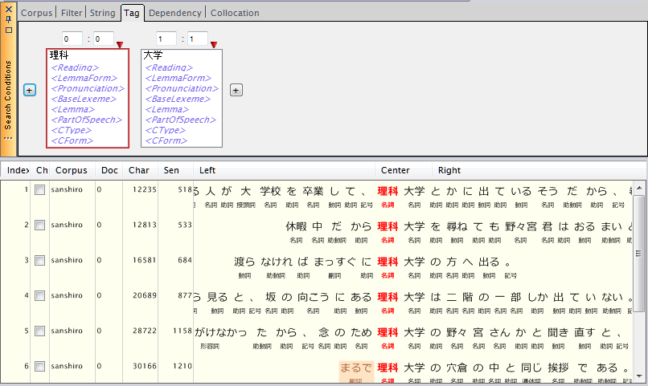
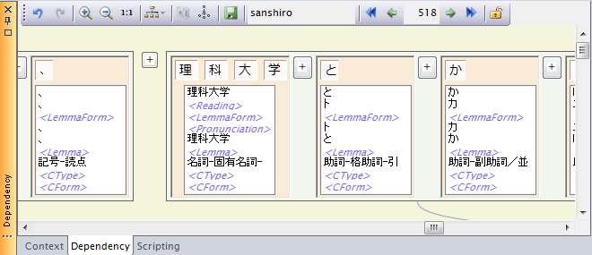
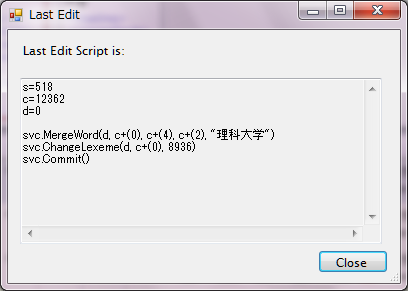
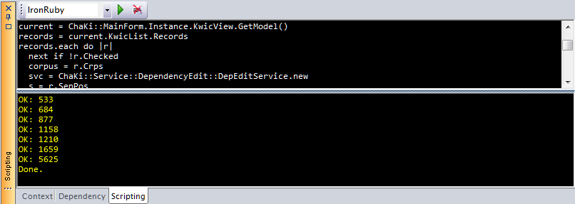
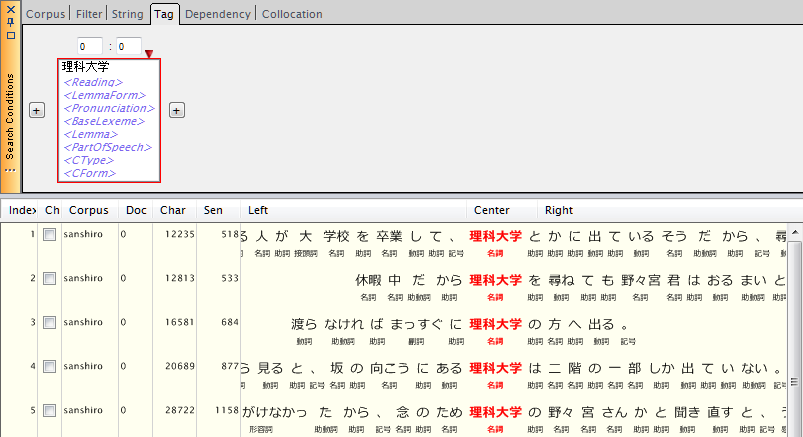

Scripting機能を用いるで説明した方法を用いて、一連の形態素編集操作をKwicViewに表示したKwic Listに対して一括適用することができます。
この操作を行う前には、DBをバックアップすることを強くお勧めします。
例として、「理科/大学」というように分かれている語を結合して「理科大学」という固有名詞Lexemeにアサインし直すことを考えます。サンプルコーパス（"sanshiro.db"）では、これに該当する箇所が複数ありますので、まずそれらをTag SearchによりKwic Listの形にします。

次に、Dependencyパネルを用いて形態素編集により最初の文を編集します。
ここでは、(1)2語を連結、(2)新語「理科大学」を登録、(3)連結した語にその新語をアサイン、という順に編集を行い、結果をセーブします。

セーブしたら、後のスクリプト実行の妨げになるので、DBのロックを解除します(Dependencyパネルのツールバーから をクリック)。
をクリック)。
次に、メインメニューから、"Search - View Last Edit"を選択します。すると先ほど行った編集操作をスクリプトで表したコードフラグメントが表示されます。

先頭のs=, c=, d=はそれぞれ、編集対象の文ID, 中心語の開始文字位置, ドキュメントIDを示しますが、その次の空行以降がこの3つのパラメータに対する相対位置関係を用いて記述された編集操作のスクリプトになります。 この空行以下3行を下記のスケルトンコード内の#insert here -->と#<-- insert hereの間に挿入すれば、IronRubyによる一括変更スクリプトが出来上がります。
load_assembly "System.Core"
load_assembly "System.Windows.Forms"
load_assembly "ChaKi.NET"
load_assembly "ChaKiEntity"
load_assembly "ChaKiService"
current = ChaKi::MainForm.Instance.KwicView.GetModel()
records = current.KwicList.Records
records.each do |r|
next if !r.Checked
corpus = r.Crps
svc = ChaKi::Service::DependencyEdit::DepEditService.new
s = r.SenPos
svc.Open(corpus, s, nil)
d = r.Document.ID
c = r.StartCharPos + r.GetCenterCharOffset()
svc.CenterWordStartAt = c
begin
#insert here -->
#<-- insert here
rescue System::Exception => e
printf("Error at: %d (%s)\n", s, e)
next
ensure
svc.Close()
end
printf("OK: %d\n", s)
r.Checked = false
end
ChaKi::MainForm.Instance.KwicView.Invoke(System::Action.new { ChaKi::MainForm.Instance.KwicView.Refresh() })
print "Done.\n"
出来上がったスクリプトをScriptingパネルの上側にCtrl-v等で貼り付けます。
load_assembly "System.Core"
load_assembly "System.Windows.Forms"
load_assembly "ChaKi.NET"
load_assembly "ChaKiEntity"
load_assembly "ChaKiService"
current = ChaKi::MainForm.Instance.KwicView.GetModel()
records = current.KwicList.Records
records.each do |r|
next if !r.Checked
corpus = r.Crps
svc = ChaKi::Service::DependencyEdit::DepEditService.new
s = r.SenPos
svc.Open(corpus, s, nil)
d = r.Document.ID
c = r.StartCharPos + r.GetCenterCharOffset()
svc.CenterWordStartAt = c
begin
#insert here -->
svc.MergeWord(d, c+(0), c+(4), c+(2), "理科大学")
svc.ChangeLexeme(d, c+(0), 8936)
svc.Commit()
#<-- insert here
rescue System::Exception => e
printf("Error at: %d (%s)\n", s, e)
next
ensure
svc.Close()
end
printf("OK: %d\n", s)
r.Checked = false
end
ChaKi::MainForm.Instance.KwicView.Invoke(System::Action.new { ChaKi::MainForm.Instance.KwicView.Refresh() })
print "Done.\n"
このスクリプトは、KwicViewにおいてチェックの入った行に対して操作を実行するように書かれていますので、実行前に先ほど編集を行った文を除いたすべての行にチェックを入れます。
2012/9/28 追記：DepEditService::Open() APIの引数が1個増えたことに対応して、"nil"引数をサンプルコードに追加しました。
実行すると次のように出力が得られます。

スクリプトにより、成功した行のチェックは解除されます。問題がある場合はエラーが表示され、該当するKwicListの行はチェックされたままとなります。
成功したら「理科大学」で再度Tag Searchを行い、編集結果を確認します。

なお、この操作によりコーパスから「理科」というLexemeを使用する語がなくなりますが、編集前の状態でDBに存在していたLexemeは削除されません。これに対し、編集中に中間状態として作成したLexemeで、編集終了(Commit)時に残っていないものは自動削除されます（Commit対象から外れる）。
参考までに、上記の編集を元に戻すためのコードフラグメントは次のようになります。
svc.SplitWord(d, c+(0), c+(4), c+(2), "理科", "大学") svc.ChangeLexeme(d, c+(0), 8614) svc.ChangeLexeme(d, c+(2), 6627) svc.Commit()